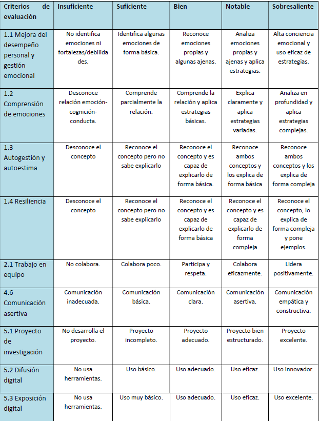

EVALUACIÓN
La evaluación en esta unidad se concibe como un proceso continuo y formativo, orientado no solo a medir los resultados del aprendizaje, sino a acompañar y mejorar el proceso de cada alumno. Desde una perspectiva educativa actual, evaluar implica recoger información relevante sobre lo que el alumnado sabe, comprende y es capaz de hacer, para ofrecer una retroalimentación útil que favorezca su progreso.
El uso de un cuestionario en Google Forms responde a esta visión, ya que permite obtener evidencias inmediatas del aprendizaje, facilitar la autoevaluación y detectar dificultades de manera ágil. Más allá de la calificación, este instrumento se utilizará como una oportunidad para reflexionar sobre los errores, reforzar los conocimientos adquiridos y orientar los siguientes pasos en el proceso de enseñanza-aprendizaje.
De este modo, la evaluación se convierte en una herramienta al servicio del aprendizaje, promoviendo la implicación activa del alumnado y el desarrollo de su autonomía.
Para ello, vamos a realizar un pequeño formulario mediante GOOGLE FORM, que se muestra a continuación:
Google Formulario sobre la unidad.
Rúbrica del Proyecto Final (INVESTIGACIÓN - EXPOSICIÓN)
Vuestra investigación - exposición se calificará atendiendo la siguiente rúbrica:
